Руководство по платформе. Разделено по ролям:
Теперь продажи идут внутри платформы: клиент собирает корзину и оформляет заказ на сайте, заказ попадает в админку. Telegram остаётся только для уведомлений и формы заявки на лендинге.
На главной — слайдер с баннерами (стрелки по бокам, точки снизу, автопрокрутка).
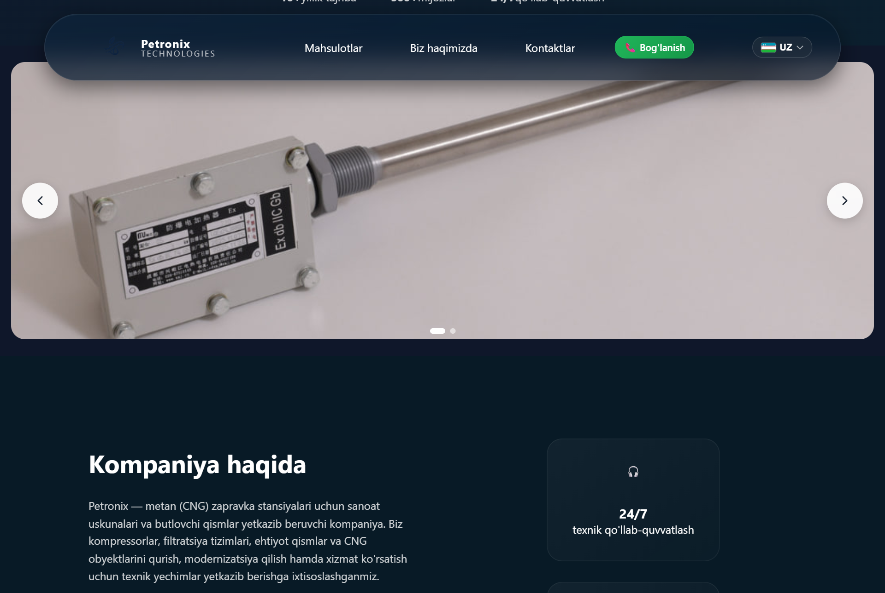
В правом верхнем углу — переключатель с флагами: 🇺🇿 O'zbek, 🇷🇺 Русский, 🇬🇧 English. Весь сайт переключается сразу, выбор запоминается.
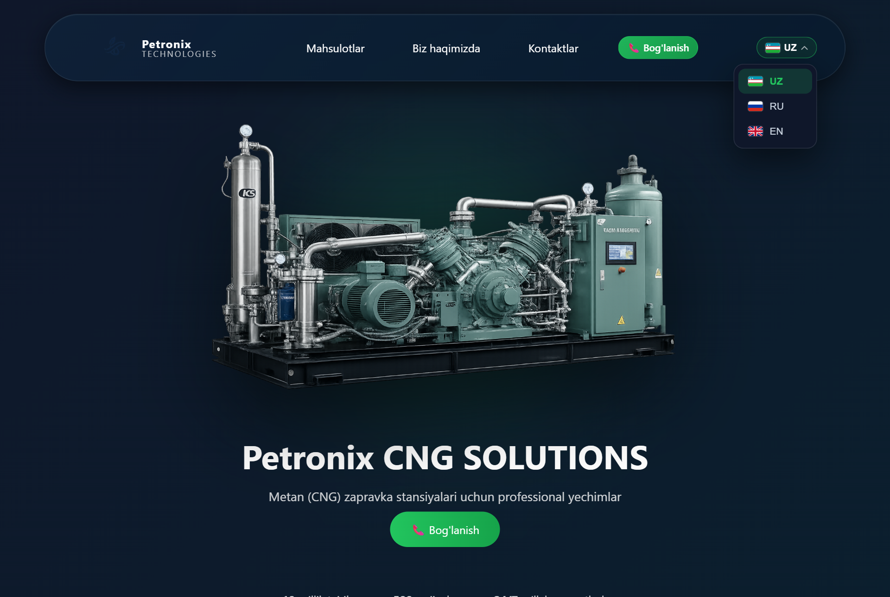
Раздел Mahsulotlar / Товары (/products). Слева — категории; при выборе категории раскрываются её подкатегории. Над списком — поиск по названию. Фильтр и поиск работают на сервере, товары подгружаются кнопкой «Показать ещё».
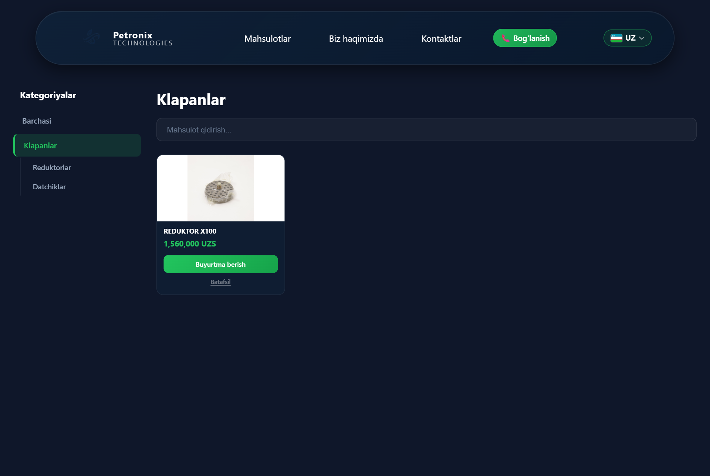
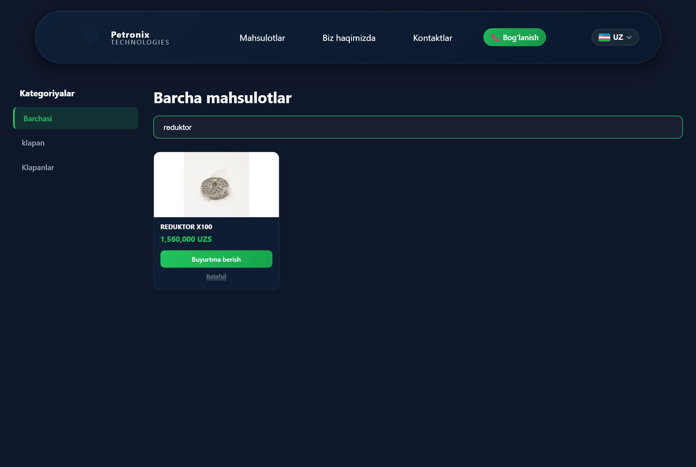
Кнопка «Savatga qo'shish / В корзину» на карточке товара добавляет его в корзину (счётчик — в шапке, иконка корзины). На странице /cart:
− / +), удаляешь позиции;Регистрация для заказа не нужна — оформляется как гость. После отправки появляется подтверждение с номером заказа; менеджер связывается с тобой.
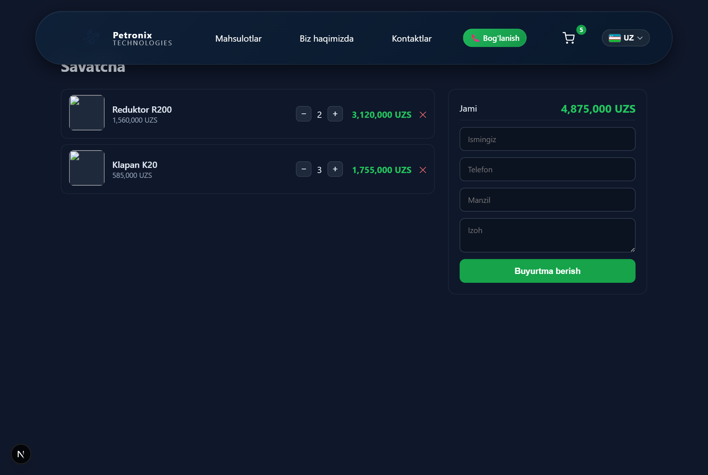
Дилер — продавец со своим кабинетом: ведёт свои товары, видит свои заказы и остатки.
https://petronix.uz/register — имя, email, пароль (мин. 8 символов). Аккаунт создаётся с ролью продавец (DEALER), дальше попадаешь в кабинет.
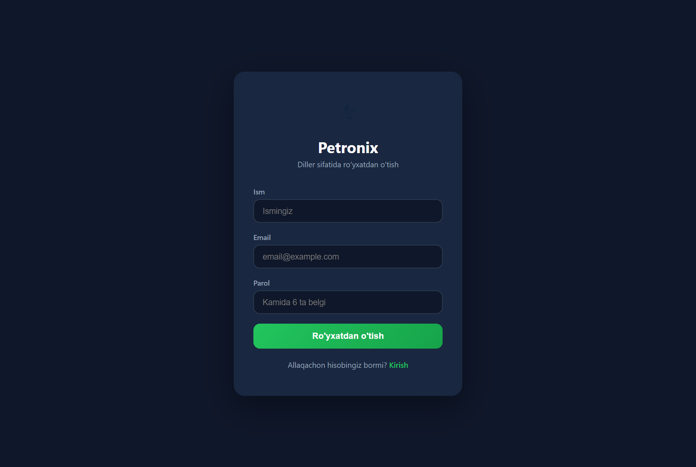
https://petronix.uz/login — email и пароль. Внизу — ссылки между входом и регистрацией.
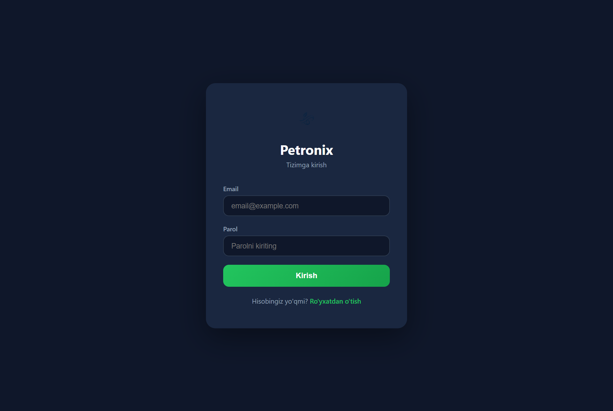
После входа доступны разделы Mahsulotlar (товары), Buyurtmalar (заказы) и Ombor (склад) — но всё только по своим товарам.
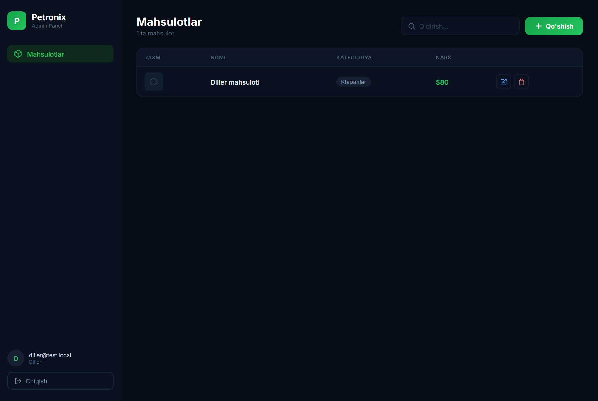
Админу доступно всё: заказы, склад, отчёты, товары всех продавцов, категории и карусель.
Список всех заказов: клиент, телефон, сумма, оплата, статус. По заказу можно:
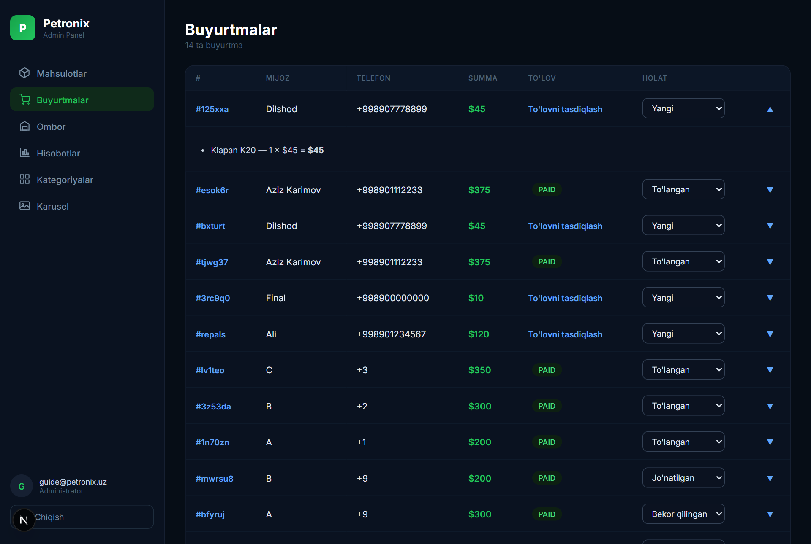
При переходе заказа в «подтверждён/оплачен» товар автоматически списывается со склада; при отмене — возвращается.
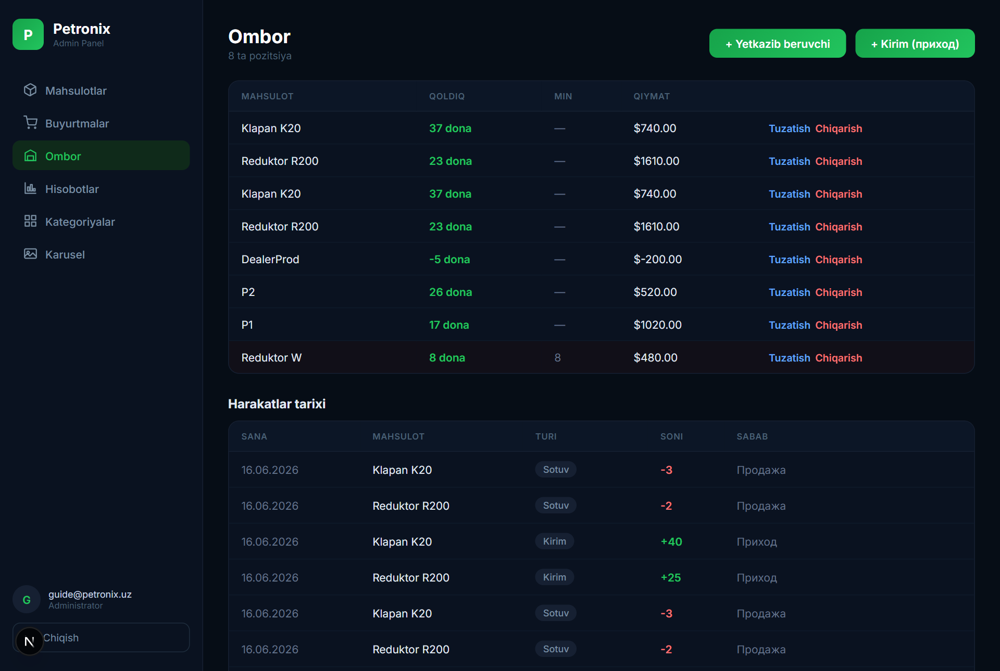
Выбираешь период и отчёт; есть выгрузка в CSV:
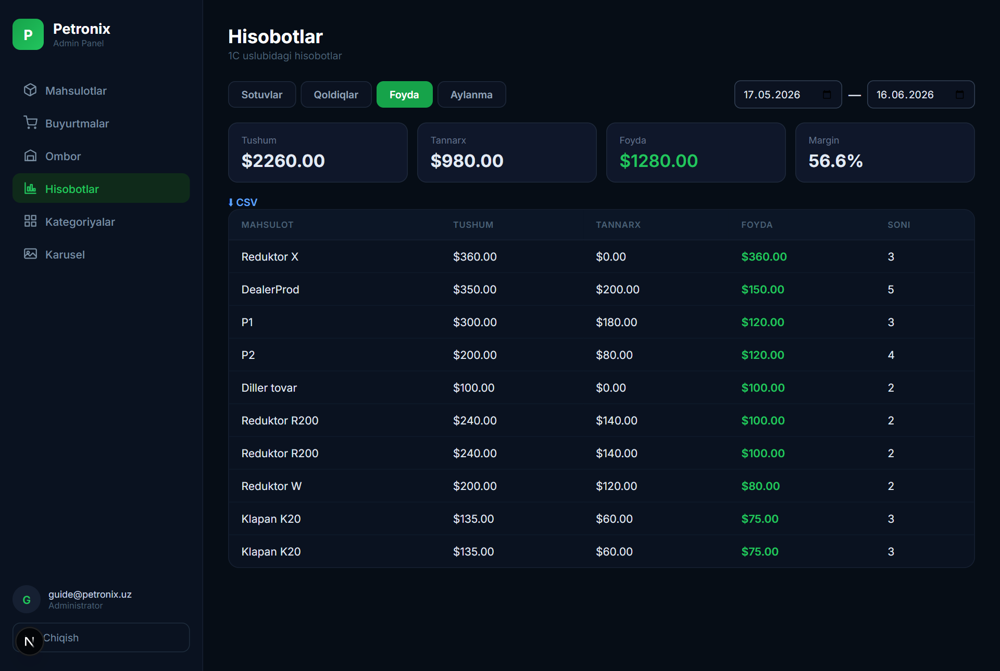
Загрузка/удаление баннеров главной страницы (JPEG/PNG/WebP, до 5 МБ). Не зависит от категорий.
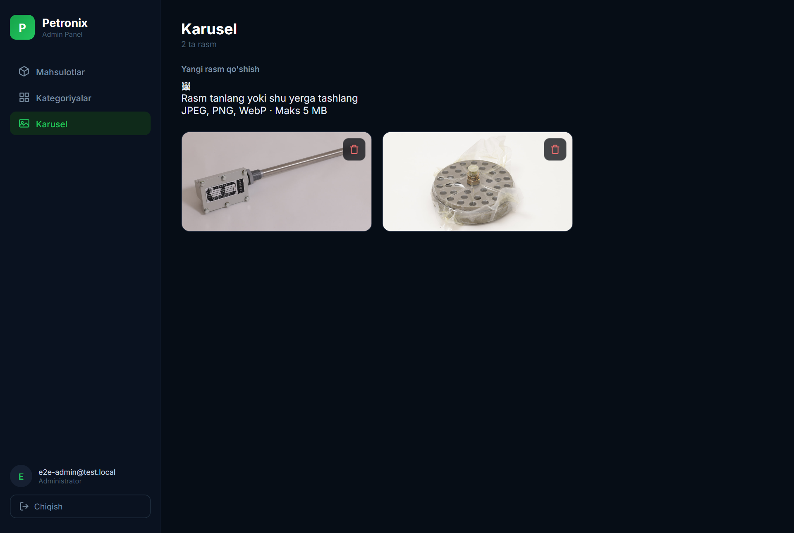
«+ Qo'shish» для категории (название на 3 языках + slug). Внутри карточки — блок «SUBKATEGORIYALAR» для подкатегорий. ✏️ / 🗑 — редактировать/удалить (удаление категории удаляет её подкатегории).
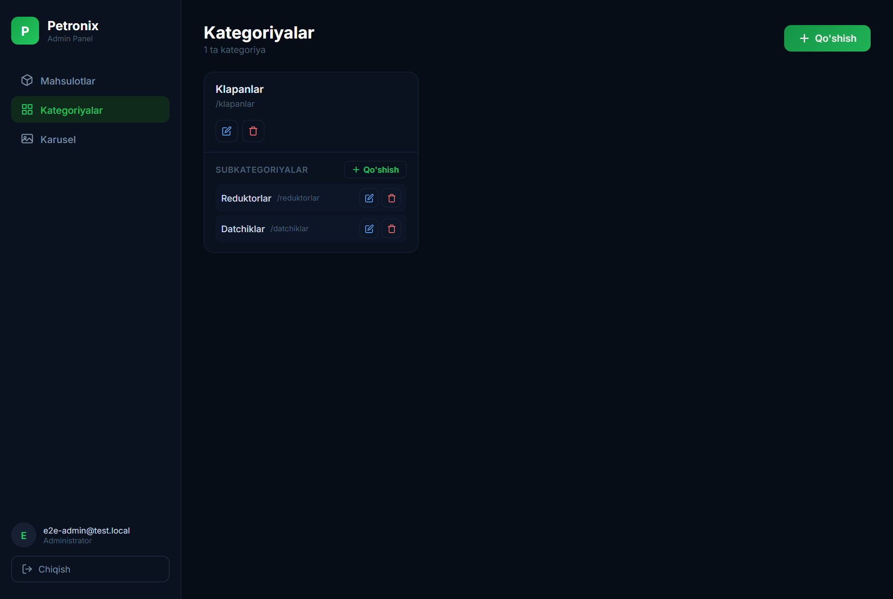
Mahsulotlar → «Qo'shish». Выбор категории → появляется поле подкатегории. Заполняешь названия/описания (3 языка), цены (закупка, розница, опт), фото.
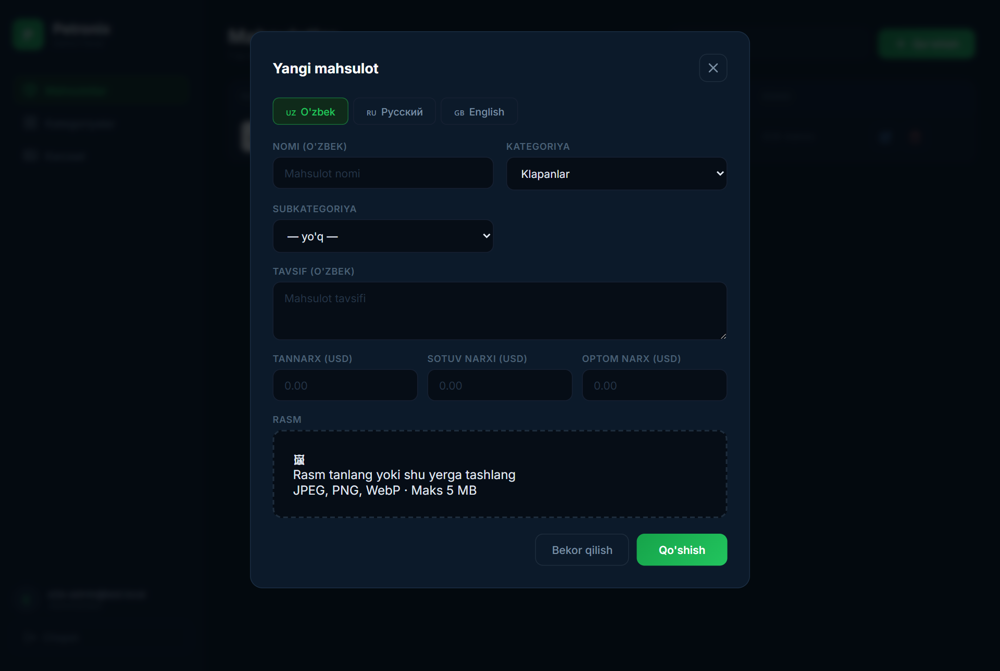
| Действие | Клиент | Продавец | Админ |
|---|---|---|---|
| Каталог, поиск, корзина, оформление заказа | ✅ | ✅ | ✅ |
| Переключение языка | ✅ | ✅ | ✅ |
| Регистрация / вход | — | ✅ | ✅ |
| Свои товары | — | ✅ | ✅ |
| Свои заказы и остатки | — | ✅ | ✅ |
| Все заказы, смена статуса, оплата | — | — | ✅ |
| Склад: приход, списание, поставщики | — | — | ✅ |
| Отчёты (продажи/остатки/прибыль/обороты) | — | — | ✅ |
| Категории, подкатегории, карусель | — | — | ✅ |